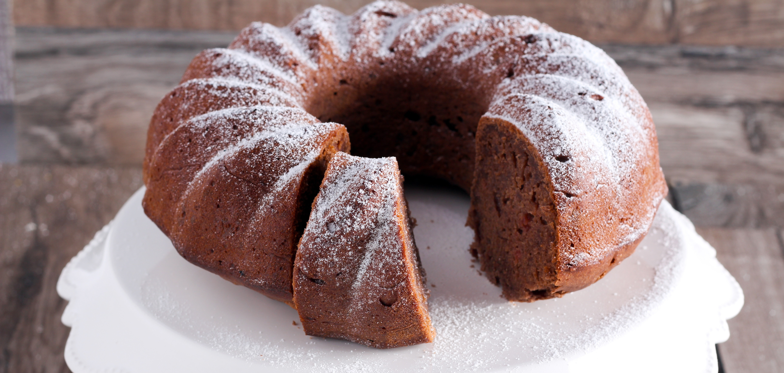

Arroz de
Couve-Flor
• Arroz
• Couve-Flor
• Cebola Média
• Azeite
Deixe a couve-flor picada. Adicione os ingredientes e refogue bem. Adicione sal, tampe a penela e deixe cozinhar.

Bolo de Café
• Farinha de Trigo
• Acúcar
• Café Coado
• Chocolate em Pó
• Ovos
Bata o acúcar, as gemas e o café. Adicione farinha e o Chocolate e mexa bem. Bata as claras e junte á mistura.
Coxinha de
Brigadeiro
• Leite Condensado
• Chocolate em pó
• Manteiga
• Morango
• Chocolate Granulado
Junte o leite condensado, chocolate em pó e manteiga. Aqueça no fogo baixo. Envolva os morangos e passe o granulado.